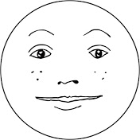

내가 좋아하는 유투버
제가 좋아하는 유투버를 소개합니다.
사나고
총몇명
홍사운드
총몇명
본명
총명
컨텐츠
병맛 그림 패러디
소속사
샌드박스
구독자 수
118,549,008회
누적 조회수
304,952,472회
소개 : MV, CF, 영화/드라마의 명장면, 예능의 한장면을 발로 그린 듯한 그림으로 패러디하는 크리에이터
매력 : 개성있는 그림체, 유행어, 현대적 감성의 개그
<만약 SKY캐슬에 모리가 출연한다면? [총몇명의 IF]>
 내가 좋아하는 유투버
내가 좋아하는 유투버